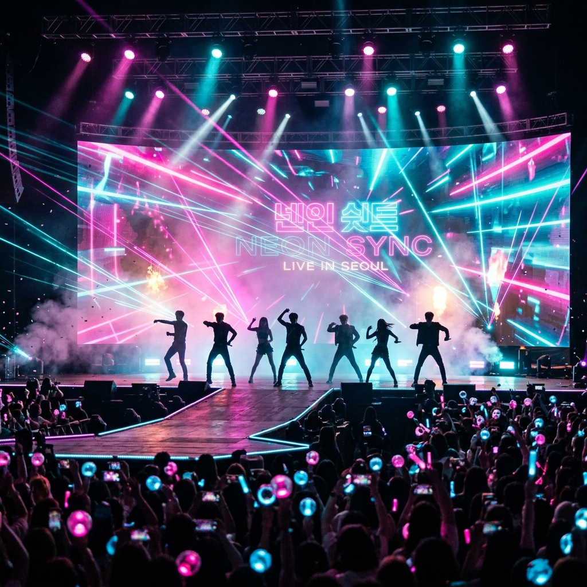
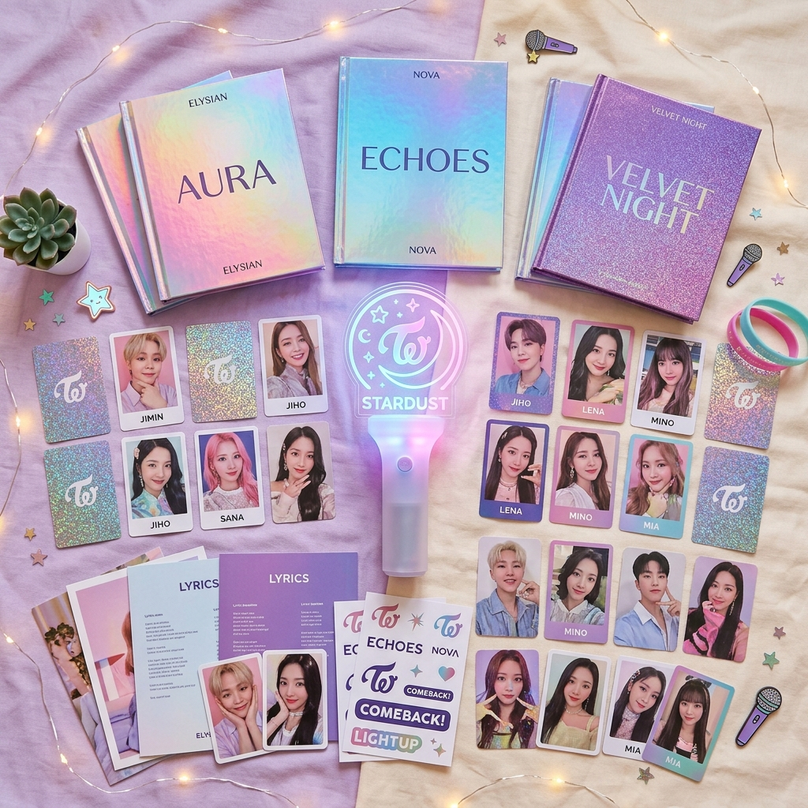

K-팝이란 무엇인가요? What is K-POP?
K-팝(Korean Popular Music)은 대한민국의 대중음악을 일컫는 말로, 오늘날에는 단순한 음악 장르를 넘어 댄스, 패션, 글로벌 팬덤 문화가 융합된 종합적인 문화 콘텐츠로 자리잡았습니다.
K-pop (Korean Popular Music) refers to popular music originating from South Korea. Today, it has evolved beyond a mere musical genre into a comprehensive cultural package integrating dance, fashion, and global fandom culture.
힙합, R&B, 일렉트로닉 댄스 등 전 세계의 다양한 장르를 독창적인 한국식 감성으로 재해석하여 누구나 쉽게 즐길 수 있는 글로벌 메인스트림 음악이 되었습니다.
By reimagining diverse global genres such as hip-hop, R&B, and electronic dance music with unique Korean sensibilities, it has established itself as mainstream music enjoyed worldwide.

K-팝을 구성하는 3대 요소 3 Key Elements of K-POP
전 세계 팬들이 K-팝에 열광할 수밖에 없는 특별한 이유 Special reasons why global fans fall in love with K-pop
독보적인 퍼포먼스 Unrivaled Performance
수개월간의 연습으로 다져진 자로 잰 듯한 칼군무와 파워풀한 퍼포먼스는 K-팝 무대의 상징입니다. 시각적인 즐거움과 짜릿한 카타르시스를 선사합니다. Razor-sharp synchronized choreography and powerful stage presence, perfected through rigorous training, are hallmarks of K-pop, delivering visual thrill and catharsis.
감각적인 비주얼 & 콘셉트 Striking Visuals & Concept
앨범마다 새롭게 정의되는 스토리텔링과 세계관, 그리고 세련된 패션과 화려한 뮤직비디오는 음악을 넘어 시각적 예술을 완성합니다. Creative universe, storytelling defined in every album, trendy fashion, and cinematic music videos complete a visual art form that goes beyond music.
글로벌 팬덤 문화 Global Fandom Culture
소셜 미디어와 글로벌 플랫폼을 통해 아티스트와 전 세계 팬들이 실시간으로 교감하며, 단순한 소비를 넘어 하나의 거대한 유대 관계를 형성합니다. Artists and international fans communicate in real-time via social media and global platforms, forming a tight-knit community that transcends mere commercial consumption.

피지컬 앨범과 팬덤 굿즈 Physical Albums & Fandom Merch
K-팝은 단순히 음악을 듣는 즐거움을 넘어 소유의 가치를 선사합니다. 아티스트의 콘셉트 세계관을 고스란히 담아낸 독창적인 앨범 디자인, 희소가치가 높은 랜덤 포토카드, 그리고 공연장을 빛내는 응원봉(Lightstick)은 팬덤 문화를 하나로 이어줍니다. K-pop offers the value of ownership beyond the simple joy of listening. Creative album packaging containing the artist's concept universe, rare random photo cards, and glowing custom lightsticks that light up concert halls unite the fandom culture.
K-팝의 발전 흐름 The Evolution of K-POP
세대를 거듭하며 진화하는 아티스트와 음악적 스펙트럼 Artists and musical spectrum evolving through generations
2세대 & 3세대 2nd & 3rd Generation
동방신기, 빅뱅, 소녀시대부터 방탄소년단(BTS), 블랙핑크에 이르기까지 글로벌 시장의 문을 열고 정상에 선 황금기. The golden age that opened the global market and reached the top, from TVXQ, BIGBANG, and Girls' Generation to BTS and BLACKPINK.
4세대 4th Generation
뉴진스, 아이브, 에스파, 스트레이 키즈 등 독창적인 콘셉트와 강력한 1020 팬덤을 기반으로 한 다채로운 음악 트렌드. A colorful music trend powered by unique concepts and strong Gen Z fandoms, featuring groups like NewJeans, IVE, aespa, and Stray Kids.
5세대 & 그 이후 5th Gen & Beyond
가상 아티스트의 도약, 숏폼 맞춤형 직관적 음악과 이지 리스닝 트렌드 속에 다인원 그룹 idntt의 데뷔와 아이돌들의 자체 프로듀싱 비중 확대. The rise of virtual artists, short-form-friendly hook songs, and the easy listening trend alongside the debut of multi-member group idntt and the expansion of self-producing idols.
2026 K-POP 실시간 트렌드 & 뉴스 2026 K-POP Real-time Trends & News
가장 뜨거운 최신 K-팝 소식과 업계 동향 (출처: 위키백과) The hottest K-pop news and industry updates (Source: Wikipedia)
에스파 'LEMONADE' & 아일릿 'It's Me' 차트 정상 격돌 aespa's 'LEMONADE' & ILLIT's 'It's Me' Battle for Charts
2026년 7월 컴백 대란 속에서 에스파(aespa)의 신곡 'LEMONADE'와 아일릿(ILLIT)의 'It's Me', 그리고 허츠투허츠(Hearts2Hearts)의 'Lemon Tang' 등이 음원 차트 최상위권에서 뜨겁게 경쟁하고 있습니다. In the mid-July 2026 comeback rush, aespa's new single 'LEMONADE,' ILLIT's 'It's Me,' and Hearts2Hearts' 'Lemon Tang' are fiercely competing at the top of the music charts.
TXT 연준 & 몬스타엑스 기현 솔로 활동 및 20인조 'idntt' 데뷔 TXT Yeonjun & MONSTA X Kihyun Solos & 'idntt' Debut
투모로우바이투게더(TXT) 연준의 솔로 프로젝트, 몬스타엑스 기현 및 틴탑 니엘의 솔로 컴백이 이어지는 한편, 20인조 초대형 신인 그룹 'idntt'가 가요계에 정식 출격했습니다. While TXT Yeonjun's solo project, MONSTA X Kihyun's, and Teen Top Niel's solo comebacks are underway, the mega 20-member rookie group 'idntt' has officially debuted.
직관적 숏폼 훅송의 강세 및 '셀프 프로듀싱'의 확대 Rise of Short-form Hooks & Self-Producing Idols
최근 K-팝 곡들은 숏폼 콘텐츠 전파 속도에 맞춰 인트로를 단축하고 곧바로 강력한 훅으로 들어가는 전개를 보이고 있으며, 직접 작사·작곡 및 안무 제작을 이끄는 젊은 아이돌들의 프로듀싱 역량이 더욱 조명받고 있습니다. Recent K-pop tracks are shortening intros and jumping straight into powerful hooks for short-form virality, while the self-producing capabilities of young idols leading songwriting and choreography gain massive attention.
더 넓은 K-팝의 세계로 Into the Wider World of K-POP
지금 이 순간에도 전 세계의 리스너들을 흥분시키고 있는 K-팝 트랙을 찾아 감상해 보세요. 당신만의 최애(Bias)가 기다리고 있습니다. Explore and listen to the K-pop tracks thrilling listeners worldwide right now. Your bias is waiting for you.
K-팝 트렌드 보러가기 Explore K-pop Trends